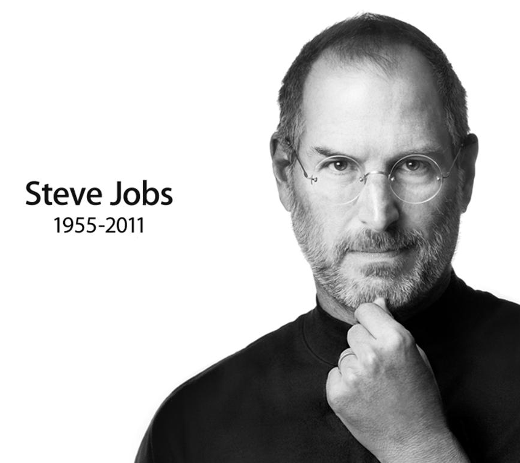

디자인은 겉모습이나 느낌이 아닙니다.
디자인은 그것이 어떻게 작동하는가입니다.
스티브 잡스 / 뉴욕타임스 매거진 2003

휠
손가락은 직선보다 원을 잘 그린다1,000곡에 필요한 건 더 큰 화면이 아니라 회전 속도가 곧 이동 거리가 되는 입력이었습니다. 천천히 돌리면 한 칸, 빠르게 돌리면 수십 칸 — 임계각이 실시간으로 줄어듭니다. 딸깍 소리는 스피커가 아니라 본체에서 났습니다. 눈을 감고도 몇 칸을 지났는지 알도록.
바운스
손을 뗀 뒤에 벌어지는 일두 목록은 기능이 완전히 같습니다. 차이는 손을 뗀 뒤에 벌어집니다. 끝에서 늘어났다 돌아오는 0.3초는 아무 정보도 주지 않고, 다만 "여기가 끝"이라는 사실을 손가락에 알려줍니다. 애플이 특허(US 7,469,381)까지 낸 게 이 바운스였습니다.
끌어다 놓기
1984년이 없앤 것은 명령어였다매킨토시 이전에 파일을 옮기려면 경로와 문법을 외워서 타이핑해야 했습니다. 매킨토시는 그 자리에 손을 넣었습니다. 집어서, 옮기고, 놓는다 — 현실에서 이미 하던 동작 그대로입니다. 점선 안에 안 쳐도 되는 명령어가 표시됩니다.
밀어서 열기
조작법이 컨트롤 위에 적혀 있다사용설명서가 필요 없습니다. 할 일이 컨트롤 위에 적혀 있고, 왼쪽에서 오른쪽으로 훑는 빛이 방향을 알려줍니다. 그리고 실패가 안전합니다. 중간에 놓으면 아무 일도 없이 제자리로 돌아옵니다. 우연히 열릴 확률은 0에 가깝지만, 열려고 하면 한 번에 열립니다.
바뀌는 자판
플라스틱 버튼은 그 자리에 못 박힌다2007년 잡스가 경쟁 제품을 늘어놓고 지적한 건 화면 크기가 아니라 자판이었습니다. 숫자만 받는 칸에서도 알파벳 40개가 자리를 차지합니다. 위 세 칸을 옮겨 다녀 보세요. 메일 칸에서는 @와 .com이 생기고 스페이스가 사라집니다.
스케일
프롬프트 창은 명령줄로의 회귀다빈 입력창은 "무엇을 쳐야 하는지 먼저 배우라"고 요구합니다. 여기서는 조절 손잡이가 결과물 자체에 붙어 있습니다. 잡아 늘리면 길어지고 밀어 올리면 요약됩니다. 점선 안의 문장은 같은 일을 시키려면 쳐야 했을 말 — 안 쳐도 되는 말입니다.
명사 후 동사
고르기 전엔 아무 동사도 없다동사를 먼저 고르게 하면 사용자는 그 동사가 무엇에 쓰이는지 외워야 합니다. 제록스 PARC의 래리 테슬러는 순서를 뒤집자고 했습니다 — 대상을 먼저 고르면 그 대상이 할 수 있는 일만 나타난다. 1981년 제록스 스타가 이를 제품으로 구현했고, 테슬러는 이듬해 애플로 옮겨 같은 원칙을 리사와 매킨토시에 심었습니다. 외울 명령어도, 불가능한 명령을 내릴 방법도 없어집니다.
준비된 제안
가장 빠른 답변은 답변하지 않는 것요청도, 대기도 없습니다. 문서를 여는 순간 고칠 곳이 이미 표시돼 있습니다. 사용자가 하는 일은 문장을 만드는 게 아니라 고르는 것뿐입니다 — 파란 쪽을 누르면 바뀌고, ✕를 누르면 사라집니다. 제안 문구는 전부 미리 쓰여 있습니다.
확신의 농도
모르는 부분이 먼저 눈에 띄어야 한다지금의 AI는 기록에서 온 날짜도, 자료마다 갈리는 어림값도, 출처 없이 떠도는 일화도 전부 같은 굵기의 단정적인 문장으로 보여줍니다. 여기서는 글자의 농도가 곧 자료의 층위입니다. 흐린 곳을 누르면 1차 기록인지, 갈리는 2차 자료인지, 구전인지가 나옵니다.
되돌리기
지나간 버전이 물건처럼 남는다지금의 AI 도구는 다시 시키면 아까 것이 사라집니다. 세 번째가 제일 좋았는데 네 번을 눌러버렸다면 되찾을 방법이 없습니다. 확률적으로 답이 달라지니 같은 요청을 다시 해도 같은 문장이 나오지 않습니다. 문서 편집기가 사십 년 전에 해결한 문제입니다.